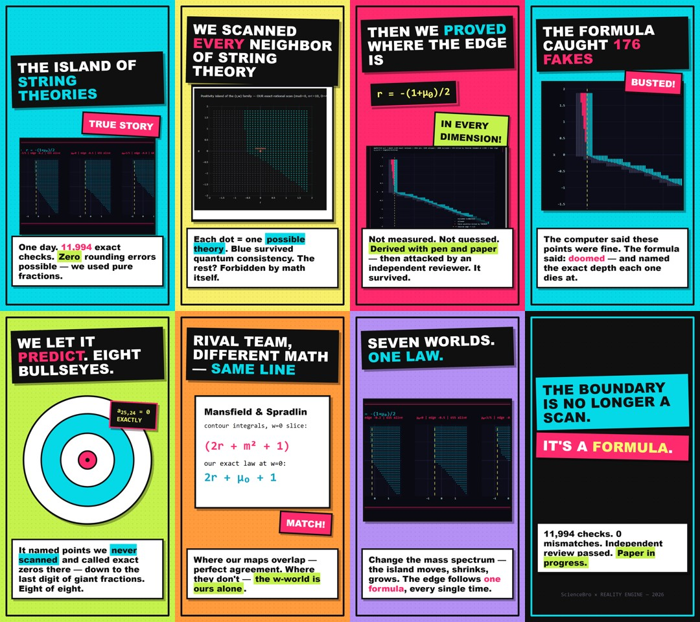

The island of string theories has edges — and now we know where
A three-parameter family of Veneziano-type string amplitudes is allowed or forbidden by one quantum rule: scattering probabilities can never be negative. Until now the allowed “island” was known only as a computer scan. This work derives its boundary in closed form — and the formulas survived 11,994 exact checks, an adversarial review, and a cross-check against a rival team's independent method.
What was done
The Cheung–Hillman–Remmen bootstrap (PRL 133, 251601) forces a three-parameter family (q, r, w) of dual resonant amplitudes; partial-wave positivity carves out an island in parameter space, mapped numerically at finite depth. Tracking the top coefficients of the level-n residue polynomial through the partial-wave projection gives exact sign laws for the near-leading Regge trajectories:
sgn an,n−1 = sgn[ n(r + (1+μ₀)/2) + w ]
Consequences: nothing survives left of r = −(1+μ₀)/2, in any dimension D > 3; the erosion of finite-depth scans is explained cell by cell; the full boundary reduces to a short list of explicit algebraic curves (conjecturally complete, and labeled as such); and for q > 1 the depth at which unitarity kills the deformation follows ncrit ≈ 1.1(q−1)−1/2.

The 0.02-resolution boundary scan. Pink: 176 points a depth-20 scan wrongly admits — each removed by the law, with its death depth predicted.
How it was checked
Every claim-bearing computation uses exact rational arithmetic — floating-point error cannot exist. The evaluator was validated by two independent routes; the derivations passed an independent adversarial review (its six-attack falsification script ships with the code and exits clean); a from-scratch validator that imports none of the project code reproduced the key results (PASS 5/5); and on the one slice where a rival method exists (Mansfield–Spradlin, JHEP 02 (2025) 145), both approaches land on the same line.
Media
Two ways in: a 66-second video abstract for colleagues, and a 48-second explainer for everyone else (English and Russian). Plus the data itself, rendered.
{kind=link}

Honest status: the edge law and trajectory brackets are derived and independently reviewed; completeness of the boundary characterization is a conjecture, verified on 11,994 exact points to depth 80 and labeled as such in the paper.